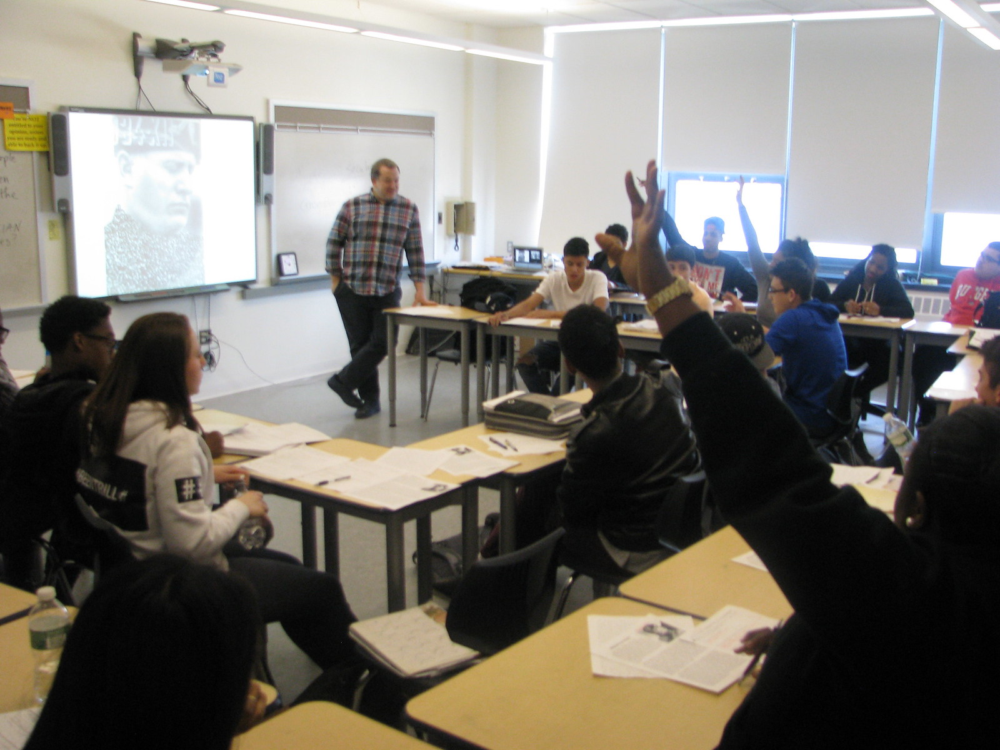

Tech Interview

Introduction
His name is Philip Pigao and he is 50 years old and he is my father in my family.
Interview
- How old were you when you got your first computer?
20 years old
- What was your favorite piece of technology when they were growing up?
Computer
- How has technology changed over your lifetime?
It became faster
- Have the changes you’ve seen in technology over your lifetime mostly helped or hurt society?
It helped society
- What is your greatest hope for technology in the future?
I hope technology will do the household chores.
- What is your greatest fear for technology in the future?
Every person will be lazy because people will count on technology on everything.
- What advice would you like to share with the younger generation about technology?
Don't rely on technology.
Comments
Comment by Akhyar Rahman
Your project is organized although it doesn't have that much information it is still is well enough to read and all that good stuff.